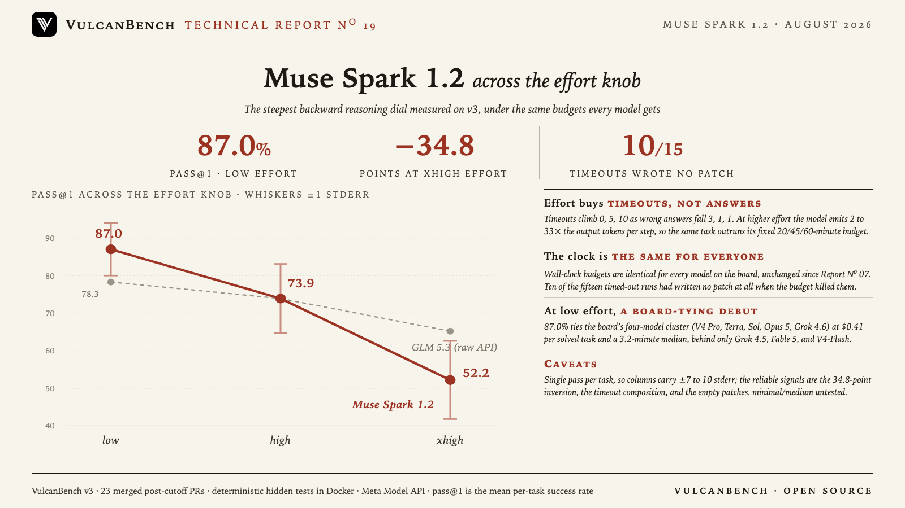

The reasoning dial runs backward, and further than any model measured here. Muse Spark 1.2 scores 87.0% pass@1 at low effort, tying the four-model 87.0% cluster on the Eval Suite 3 board at $0.41 per solved task. At high it falls to 73.9%, at xhigh to 52.2%: 34.8 points surrendered to the model’s own effort setting. The mechanism is visible in the per-step numbers. At higher effort the model emits 2 to 33× the output tokens per agent step on the same task, so runs that low effort finishes in minutes instead run out their wall clock: timeouts climb 0, 5, 10 while wrong answers fall 3, 1, 1. Ten of the fifteen timed-out runs had written no patch at all when the budget killed them. The budgets are the suite’s standing rules, identical for every model on the board and unchanged since Report No. 07.

| Effort | pass@1 | Solved | Wrong | Timeouts | Median time/task | $/solved |
|---|---|---|---|---|---|---|
| low | 87.0% ±7.0 | 20/23 | 3 | 0 | 3.2 min | $0.41 |
| high | 73.9% ±9.2 | 17/23 | 1 | 5 | 12.4 min | $1.23 |
| xhigh | 52.2% ±10.4 | 12/23 | 1 | 10 | 20.1 min | $2.27 |
One attempt per task per level, judges off, $56.36 total. Runs
executed 2026-08-25 against the Meta Model API (muse-spark-1.2), effort set via reasoning.effort
(the documented minimal/low/medium/high/xhigh enum; minimal and medium were not measured, and
Meta does not document what an unset request runs at). pass@1 is the mean per-task success rate; the integrity audit
flagged zero contaminated runs.
The steepest backward knob measured on v3. Low leads xhigh by 34.8 points, ahead of Qwen3.8-Max’s 26.1 (Report No. 12), GLM 5.3’s 13.1 on the raw API (Report No. 18), and Claude Opus 5’s 9 (Report No. 10). The gap is more than triple the ±7 to 10 point single-pass uncertainty.
Why the runs failed: slower steps against a fixed clock. Every task carries a wall-clock budget scaled by repo size (20, 45, or 60 minutes), the same for every model on the board and unchanged since Report No. 07. At higher effort Muse Spark emits 2 to 33× the output tokens per agent step on the same task (itertools-strip-prefix: ~140 tokens/step and solved in 7 minutes at low; ~4,600 tokens/step and killed at the 60-minute wall at xhigh). All fifteen timeouts ran out that clock; none hit the step ceiling or a cost cap.
The timeouts are empty-handed, not near misses. VulcanBench grades whatever patch exists when a run is cut off, so partial work counts. In ten of the fifteen timed-out runs the patch was zero bytes: the model reasoned for its entire budget without writing a line. Eight of the fifteen are tasks the same model solves at low in 1.6 to 12 minutes.
At low effort this is a board-tying debut. 87.0% matches the four-model 87.0% cluster (DeepSeek V4 Pro, GPT-5.6 Terra, GPT-5.6 Sol, Claude Opus 5, Grok 4.6), behind only Grok 4.5, Claude Fable 5, and DeepSeek V4-Flash, at $0.36 per task and a 3.2-minute median. Judged at xhigh instead, the same model is mid-board at 52.2%.
The unsolvable trio holds. networkx-leiden-communities, pennylane-trotter-fragmented, and sqlglot-canonicalize-internal-names score zero at every setting, the same three tasks that survived Qwen3.8-Max everywhere and that GLM 5.3’s raw API never finished. Extra reasoning rescues none of the suite’s hardest tasks; it only endangers the solvable ones.
| Model (report) | best | worst | drop | failure mode at the top |
|---|---|---|---|---|
| Muse Spark 1.2 (No. 19) | 87.0% low | 52.2% xhigh | −34.8 | 10 of 11 failures are timeouts |
| Qwen3.8-Max (No. 12) | 81.2% low | 55.1% xhigh | −26.1 | every failure unfinished |
| GLM 5.3 raw API (No. 18) | 78.3% low | 65.2% max | −13.1 | 7 of 8 failures are timeouts |
| Qwen3.8-27B (No. 17) | 82.6% low | 73.9% xhigh | −8.7 | every failure unfinished |
| Claude Opus 5 (No. 10) | 87.0% low | 78.3% xhigh | −8.7 | mixed |
Five models, one pattern: on real engineering tasks under real budgets, the maker’s higher reasoning settings score worse than the lowest one, and the deficit is unfinished work. The counterexample remains Report No. 18’s ZCode track, where a product harness turned the same knob right-side up.
This is a single-pass measurement, so the per-column standard errors are wide (±7 to 10 points) and the
high-versus-xhigh ordering is suggestive; the low-versus-xhigh inversion and the wrong-versus-timeout composition are
the categorical signals. minimal and medium were not measured, and because Meta does not
document the unset default, this report cannot say what an untuned integration gets, only that it has a two-in-five
chance of a good setting.
The budgets are a fixed property of the suite, not of this report: 20 to 60 minutes by repo size, identical for
every model on the board since Report No. 07. With an unbounded clock, xhigh might finish more of what it times
out on; agents in production do not get an unbounded clock. The low column reuses five identical-configuration runs
from a 2026-08-12 invocation via --only-missing; the other 64 runs are fresh.
VulcanBench v3: 23 tasks from real merged post-cutoff PRs (Python 9, TypeScript 4, Rust 4, Go 3, JavaScript 3), graded by deterministic hidden tests in network-isolated Docker; model judges disabled. Runs executed 2026-08-25 against the Meta Model API’s OpenAI-compatible Responses endpoint, priced at $1.25 input / $4.25 output per million tokens. Effort mapping: low→low, high→high, extra-high→xhigh. Every run’s effort metadata confirms the requested level was sent and accepted, and the integrity audit (web and filesystem channels) flagged zero contaminated runs. The full model card, per-task outcome matrix, and chart generator are in the open repository.
{kind=link}